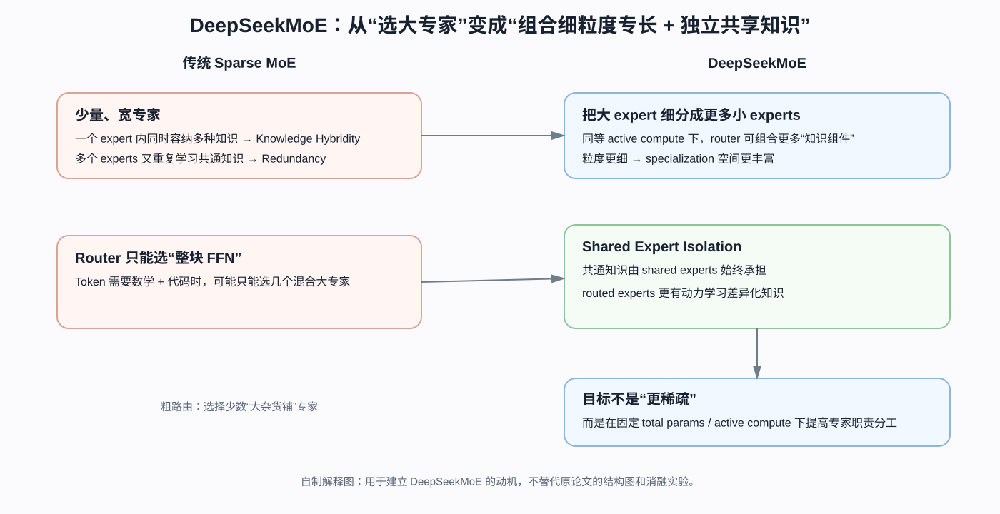
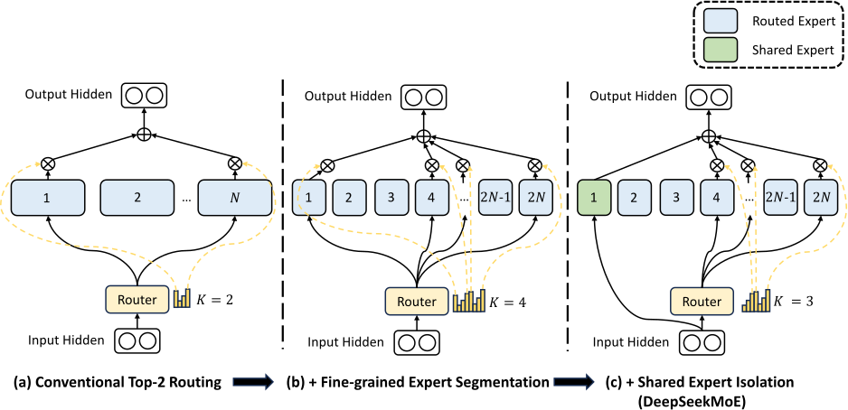
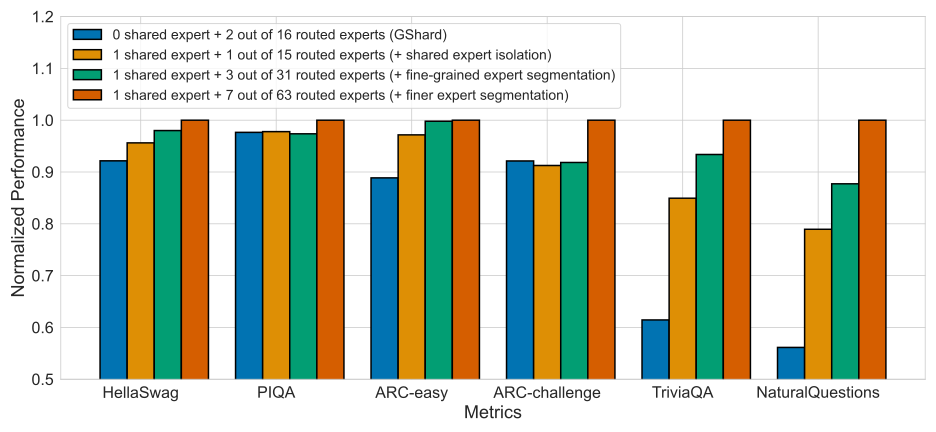
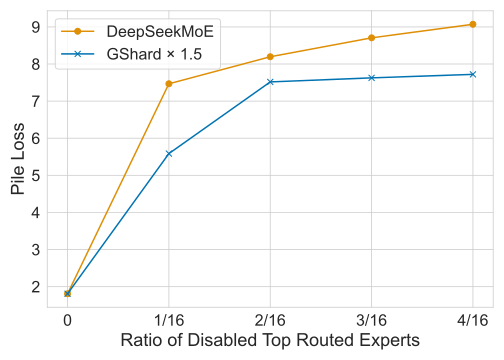

DeepSeekMoE：MoE 真正浪费的，可能不是“算了太多专家”，而是“每个专家都不够专”
原论文：DeepSeek-AI, DeepSeekMoE: Towards Ultimate Expert Specialization in Mixture-of-Experts Language Models，arXiv v1，2024-01-11。
类型：A · 原始方法论文。
一句话定位：DeepSeekMoE 不是继续追求“更稀疏”，而是在 总 expert 参数与每 token active compute 基本不变 的前提下，用 fine-grained segmentation 提高可组合粒度，再用 shared expert isolation 把共通知识从 routed experts 中剥离，目标是减少 hybridity 与 redundancy。
在当前主线中的位置：我们先读了 DeepSeek-V3，再向下追到 DeepSeek-V2 的 MLA；现在继续沿 V2/V3 的 FFN 分支下钻，回答一个更局部的问题：DeepSeekMoE 为什么要把专家切得更细，又为什么要专门留出永远激活的 shared experts？
阅读导航：这是 V2 / V3 的 FFN 技术下钻页
前置阅读
DeepSeek-V2 —— 先知道 DeepSeekMoE 在完整 Transformer 中替换的是 FFN 分支；
DeepSeek-V3 —— 先看细粒度 experts 进一步怎样变成负载均衡、expert parallel 与通信问题；
Sparsely-Gated MoE / Switch Transformer —— 如果 Top-K sparse routing 的基本范式还不熟，再回查。
读完往哪里去
回 DeepSeek-V2 看 2 shared + 160 routed experts 怎样进入完整模型；
回 DeepSeek-V3 看 1 shared + 256 routed experts、Top-8 routing 与 auxiliary-loss-free balancing；
模型主线继续到 DeepSeek-R1，那里不再改 MoE 主干，而是重点进入 reasoning post-training。
本文重点
“专家很多”为什么仍然可能不够专业；
fine-grained segmentation 怎样在相同参数 / active compute 预算下增加路由组合自由度；
shared expert isolation 到底解决什么 redundancy；
specialization 与 load balancing 为什么是两个不同问题；
Figure 3 的消融怎样分别隔离 segmentation / shared expert 的贡献；
Figure 4 的“禁用 top experts”实验到底支持什么，又不能证明什么。
如果只把 MoE 理解成：
很多 FFN，router 每次选几个，所以总参数很大、计算量很小。
那么 DeepSeekMoE 看起来会非常奇怪。
传统 MoE 已经会 Top-K 路由了，为什么还要：
把一个 expert 拆成更多、更小的 experts；
反而让每个 token 激活更多 experts；
再额外放一部分 shared experts，让所有 token 都必须计算？
表面上看，这甚至像在把稀疏 MoE 又做稠密一点。
DeepSeekMoE 的出发点其实不是继续压 FLOPs，而是反过来问：
在 total parameters 和 active compute 已经固定的情况下，现有 MoE 有没有把这些专家参数真正用好？
作者把问题概括成两个词：
Knowledge Hybridity：一个 expert 里混进了太多种不同知识；
Knowledge Redundancy：不同 experts 又重复学习了很多相同知识。
于是这篇论文真正优化的对象不是稀疏率，而是：
专家参数的职责分工。
整篇论文可以先压成这一条因果链：
传统 sparse MoE
每 token 只选 Top-K
↓
但 expert 数通常很少（8 / 16）
↓
每个 expert 很大，必须同时容纳多类知识
↓
Knowledge Hybridity
与此同时：
不同 token 虽然走不同 experts
但都需要语法、常识等共享能力
↓
多个 experts 各自重复学一份
↓
Knowledge Redundancy
于是：
把大 expert 切成更多小 expert
↓
Fine-Grained Expert Segmentation
↓
token 可以组合更多知识组件
再把共通知识单独拿出来
↓
Shared Expert Isolation
↓
routed experts 更专注差异化知识
目标：
在相同 total expert params
和相同 active expert compute 下
获得更高 expert specialization

自制解释图，不是原论文 Figure。先把作者的两个问题一一对应起来：fine-grained segmentation 主要对付 Knowledge Hybridity；shared expert isolation 主要对付 Knowledge Redundancy。后面的实验再分别检查这两种结构变化是否真的带来收益。
1. 先把传统 MoE 写清楚：Router 能选 expert，但不能选 expert 内部的知识子块
普通 Transformer 的 FFN：
Sparse MoE 把这个单一 FFN 换成：
其中 \(N\) 是 experts 总数。
router 计算 token 与第 \(i\) 个 expert 的 affinity：
然后只有 Top-\(K\) 的 gate 非零：
于是一个 token 只计算：
个 experts。
这已经实现 conditional computation。
但 router 的控制粒度只能到：
进哪个 FFN expert。
它不能说：
我只要 Expert 3 里的数学子能力和 Expert 7 里的代码子能力，但不要它们内部其他部分。
如果每个 expert 自己就是一个很宽的大 FFN，那么路由仍然很粗。
这就是第一个问题。
2. Knowledge Hybridity：专家数量太少时，一个 expert 很容易变成小型杂货铺
论文 Introduction 特别指出，当实践中只有 8 或 16 个 experts 时，一个 expert 收到的 token 很可能覆盖多种不同知识。
可以想象成：
Expert 1
syntax
common words
some code
factual recall
Expert 2
math
English
some code
reasoning
Expert 3
Chinese
factual recall
syntax
...
即使 router 已经把 token 分流，expert 内部仍可能混合许多能力。
作者称之为：
Knowledge Hybridity。
问题不是一个 expert 不能表示多种知识。
问题是：
如果这些知识只在部分 token 上同时有用，却被绑在一个大 expert 里，router 就无法重新组合更细的能力。
这像有 16 个巨大的工具箱，每次允许选 2 个箱子。
箱子里可以有几百种工具，但 router 只能整箱做决定。
DeepSeekMoE 的第一步就是：
把箱子拆小。
3. Fine-Grained Expert Segmentation：专家切小以后，为什么总参数和 active compute 都能不变？
假设传统 MoE 有：
个 experts，每个 expert 的 intermediate width 是：
每 token 激活：
个 experts。
对于一个普通两层 FFN：
忽略 bias：
即使是 gated FFN，主要参数量和 FLOPs 对 \(d_{\mathrm{ff}}\) 仍近似线性。
现在把每个 expert 切成 \(m\) 份：
expert 总数：
每个小 expert 参数：
因此总 expert 参数：
所以：
但如果拆完仍只激活 \(K\) 个小 experts，那么 active compute 会降为原来的 \(1/m\)。
这会破坏公平比较。
因此论文同时让：
新的 active expert compute：
得到第二个关键不变量：
这就是 Fine-Grained Expert Segmentation 最干净的地方：
不靠更多总参数，也不靠更多 active compute，而只是重新安排专家颗粒度。
4. 原论文 Figure 2：三种结构的预算其实是对齐的

左：传统 Top-2；中：每个 expert 切两份，总 expert 从 \(N\) 变成 \(2N\)，激活从 2 变 4；右：再隔离 1 个 shared expert，于是 shared 永远激活，routed 部分只需要 Top-3。三种结构保持相同的 expert 参数量和计算成本。
图的重点不是颜色，而是预算守恒：
(a)
N 个大 experts
Top-2
(b)
2N 个半宽 experts
Top-4
(c)
1 shared expert
+
(2N - 1) routed experts
Top-3 routed
+
1 shared
=
总共仍激活 4 份小 expert
所以 shared expert 的收益不能简单解释成：
多算了一个 FFN。
作者专门把 routed active count 减掉一份，维持同等 active compute。
5. 为什么专家切细以后，组合自由度会爆炸？
论文给了一个很直观的例子。
传统：
组合数：
若每个 expert 切成 4 份：
则：
组合数：
从 120 变成四十多亿。
但这只能解释成：
路由组合的离散上界大幅扩大。
不能推成：
模型真的使用了所有组合；
每个组合都有独立语义；
表达能力增长几十亿倍；
组合数越大一定越好。
真正重要的是：
粗粒度函数块变成更小函数块以后，router 可以按 token 重新组合这些块。
这才是作者所谓 more flexible combination 的结构含义。
6. 从函数角度看，Fine-Grained Segmentation 增加的是什么自由度？
假设一个粗 expert 实际学成：
另一个：
某个 token 主要需要 math + code。
传统 Top-2 只能选择：
整个 Expert A
+
整个 Expert B
于是很多并不需要的部分也一起绑定进来。
如果更细：
A1 ≈ math
A2 ≈ English
A3 ≈ syntax
B1 ≈ code
B2 ≈ English
B3 ≈ syntax
router 在结构上就有机会选择：
A1 + B1 + 必要的 common component
这不代表真实模型一定自动形成如此清晰的可解释模块。
更准确的说法是：
Fine-Grained Segmentation 为更高 specialization 提供了更细的结构自由度。
后面的消融和干预实验再验证这种自由度是否真的被利用。
这一组你应该记住什么
Fine-Grained Segmentation 不是“无条件增加更多专家计算”，而是把大 expert 切小，同时把 active count 按比例增加；
因为每个小 expert 更窄，所以 total expert parameters 与 active expert compute 可以近似保持不变；
真正增加的是 router 可以重新组合的函数块颗粒度；
组合数爆炸只是结构自由度上界，不能直接解释成模型表达能力增长几十亿倍。
如果你卡在这里
不懂 Top-K sparse MoE 的基本公式 → 回 Sparsely-Gated MoE；
不懂“相同 active compute”为什么成立 → 重算 §3 中每个 expert width 与 active expert count 的缩放；
想知道“切细以后到底有没有真的更专” → 继续看 §9–§10 的 controlled ablation 与 redundancy intervention。
8. Specialization 和 Load Balancing 是两个不同问题，不要混在一起
到了这里很容易把两件事混掉：
问题 A：expert 学得够不够“专”
这是本文主问题：
Knowledge Hybridity；
Knowledge Redundancy；
fine-grained segmentation；
shared expert isolation。
问题 B：router 会不会把 token 全挤到少数 experts
这是训练 / 系统稳定性问题：
routing collapse；
device load imbalance；
straggler；
跨设备通信压力。
DeepSeekMoE 原论文仍然需要额外的负载均衡约束。
论文给出 expert-level balance loss，形式可概括为：
其中：
\(f_i\) 表示 expert \(i\) 的归一化选中频率；
\(P_i\) 表示 batch 上的平均 routing affinity。
同时，为了避免某个设备承载的 routed experts 整体过热，还引入 device-level balance：
它把一组 experts 聚合到 device 粒度再看负载。
作者的实际取舍是：
expert-level balance 系数较小，用来防止极端 routing collapse；
device-level balance 可以更强，优先保证设备计算负载不要严重失衡。
这正好解释后续演化：
DeepSeekMoE / V2
仍依赖多种 auxiliary balancing losses
↓
问题：
系统平衡约束会通过 loss 直接影响主任务梯度
↓
DeepSeek-V3
主要改成 routing bias 调 selection
↓
把“选谁的系统校正”
尽量和“语言模型主 loss”拆开
所以理解 V3 的 auxiliary-loss-free balancing，必须知道它不是凭空出现的；它是在修前代 MoE 的实际训练矛盾。
9. 原论文 Figure 3：作者怎样把两个设计拆开做 controlled ablation？

这张图非常重要，因为它比“最终模型赢了多少 benchmark”更接近因果证据。
作者比较的几个结构保持：
相同 total parameters 与相同 activated parameters。
核心变化大致沿着：
传统 GShard 风格
0 shared + 2 / 16 routed
↓
只加入 shared isolation
1 shared + 1 / 15 routed
↓
再把 routed experts 切细
1 shared + 3 / 31 routed
↓
继续更细
1 shared + 7 / 63 routed
这里最该看的不是具体颜色，而是：
预算基本对齐，只改变专家结构。
论文报告的趋势是：
加入 shared expert isolation 后，多数 benchmark / validation 指标改善；
在保持预算的前提下继续提高 segmentation granularity，整体性能继续呈改善趋势。
这张图支持什么？
它支持：
在论文实验设置下，shared expert isolation 与更细的 expert segmentation 都能贡献可测的性能收益，而且收益不能简单归因于“更多参数 / 更多 active compute”。
它没有直接证明什么？
它并没有直接证明：
每个小 expert 都形成了人类可命名的单一技能；
更细一定可以无限继续；
expert 组合数越大，效果就必然越好；
shared expert 学到的全部内容都严格等于“共通知识”。
这些都是比消融结果更强的解释。
10. 原论文 Figure 4：作者怎样把“参数冗余”变成一个可干预的实验问题？

“Knowledge Redundancy”本来是一个很抽象的词。
作者把它变成了一个 intervention：
如果 routed experts 之间真的高度冗余，那么把当前最重要的一部分 routed experts 禁用掉，其他 experts 应该比较容易顶上来。
反过来：
如果每个 routed expert 更不可替代，禁用 top experts 后性能应该掉得更快。
论文用一个与 DeepSeekMoE 在正常条件下 Pile loss 匹配的 GShard 对照，逐渐禁用 top-ranked routed experts。
结果是：
DeepSeekMoE 对禁用关键 routed experts 更敏感。
作者把这种更强敏感性解释为：
routed experts 之间的可替代冗余更低，说明 specialization 更强。
论文还做了一个很有意思的 shared-expert 干预：
禁用 shared expert；
为了保持 active compute 不变，额外启用一个 routed expert；
Pile loss 从约 \(1.808\) 上升到 \(2.414\)。
这说明在该模型与训练设置里：
shared expert 承担的那部分功能，并不能简单靠“多选一个 routed expert”无损替代。
但仍然要保留证据边界
这种 intervention 强于单纯可视化，因为它真的改变模型路径再看性能。
但它仍然只是功能性证据：
top expert 被禁用后更敏感；
shared expert 被拿掉后损失变差。
它不能直接给出每个 expert 的语义标签，更不能严格证明 routed experts 彼此学习了完全互斥的知识集合。
11. 最终 scaling 结果应该怎样读：先区分 controlled evidence 与整模型对比
DeepSeekMoE 论文还报告了不同规模的模型结果。
例如论文强调：
2B 级 DeepSeekMoE 在较低 expert 参数 / compute 下，可以做到与更大 GShard 对照相当；
16B 级模型与 LLaMA2 7B 做比较时，论文强调其较低训练计算成本下的竞争力；
145B 级实验被作者明确写成 preliminary exploration，用来观察方法扩展到更大规模是否仍成立。
这些结果适合支持：
这种 expert-organization 原则能够扩展到更大模型，并具有实际效率价值。
但它们的证据强度和 Figure 3 不一样。
Figure 3
更接近：
同预算 controlled ablation，隔离结构变化。
跨模型 scaling / benchmark
往往同时改变：
模型规模；
数据； -训练 token 数；
recipe；
baseline family。
因此更适合说明：
“整套方法最终可以做成有竞争力的模型”，
而不是用来单独证明某一个结构细节的因果作用。
尤其论文对 145B 部分使用 preliminary 一类限定词时，中文解读也应该保留这种证据强度。
12. 论文细读：作者其实是先造出两个“失败模式”，再让两个设计一一对应
12.1 Introduction 为什么先命名 Knowledge Hybridity / Redundancy？
因为这两个词不是普通背景。
它们直接决定 Method 的两块结构：
Knowledge Hybridity
↓
Fine-Grained Expert Segmentation
Knowledge Redundancy
↓
Shared Expert Isolation
这是很值得学习的技术论文写法：
先定义“现有方法到底浪费在哪里”，再让每个结构变化都能回答一个具体失败模式。
12.2 “Ultimate Expert Specialization” 更像研究目标，不是已经被严格证明的终点
标题中的 ultimate 很强。
但论文真实证据包括：
同预算消融；
expert disabling intervention；
validation / benchmark；
scaling 实验。
这些证据支持：
specialization-oriented design 有效。
它们并不能把“ultimate”变成数学意义上的最优性定理。
所以技术博客更适合写：
“朝更强 expert specialization 推进”，
而不是：
“证明这种设计实现了终极专家专业化”。
12.4 工程翻译：这篇论文真正教的是“把参数容量重新组织”
如果把方法翻译成工程语言：
不是一味增加总参数，也不是一味降低 FLOPs，而是在固定预算下重新定义“可被路由选择的最小函数块”和“哪些函数块不应该参与竞争”。
这就是为什么它后来能自然成为 DeepSeek-V2 / V3 的 FFN 主干。
13. 回到 DeepSeek-V2 / V3：原始方法最后怎样变成大模型里的具体配置？
读原始方法论文的最后一步必须回到模型。
DeepSeek-V2
DeepSeek-V2 采用：
2 shared experts；
160 routed experts；
每 token 激活 6 个 routed experts。
这说明原论文里的“shared + many smaller routed experts”已经从小规模结构实验变成完整 236B MoE 的 FFN 参数化。
DeepSeek-V3
DeepSeek-V3 继续采用并调整为：
1 shared expert；
256 routed experts；
每 token 激活 8 个 routed experts。
但 V3 还额外处理了一个原始 DeepSeekMoE 没彻底解决的问题：
大规模 expert routing 怎样在不强力污染主任务 loss 的情况下保持负载均衡。
所以技术演化更准确地写成：
DeepSeekMoE
PROPOSES / FORMULATES:
fine-grained expert segmentation
+ shared expert isolation
↓
DeepSeek-V2
ADOPTS:
作为主模型 FFN 路径
+ 多种 auxiliary balancing
↓
DeepSeek-V3
ADOPTS / EXTENDS:
更大 expert pool
+ routing-bias-based main balance
+ 更复杂 expert parallel / communication overlap
这条链比一句“V3 使用 DeepSeekMoE”信息量大得多。
14. 读完 DeepSeekMoE 后，应该把问题带回哪一篇？
如果你卡在“为什么 expert 切小仍不增加计算”
→ 回本文 §3，把 expert width 缩小 \(m\) 倍、active count 增大 \(m\) 倍重新算一遍。
如果你卡在“specialization 和 load balance 有什么区别”
→ 看 §8，然后回 DeepSeek-V3 的 auxiliary-loss-free balancing。
如果你卡在“这些方法在完整大模型哪里执行”
→ 回 DeepSeek-V2 / DeepSeek-V3 的 Transformer block 数据流。
如果你现在想继续模型主线
→ DeepSeek-R1，从“模型如何构建”切换到“强 Base 怎样通过后训练改变 reasoning policy”。
读完本篇至少应该能回答
Knowledge Hybridity 与 Knowledge Redundancy 分别是什么？
为什么把 \(N\) 个宽 expert 改成 \(mN\) 个窄 expert 可以保持总 expert parameters 不变？
为什么 active expert count 还必须从 \(K\) 变成 \(mK\)？
组合数暴涨为什么不能直接解释成表达能力暴涨？
shared expert 为什么不会必然增加 active compute？
为什么 shared expert 更适合承接 common knowledge？
shared expert 原型与 DeepSeekMoE 本文的 novelty 应该怎样区分？
expert specialization 与 expert load balance 为什么是两个不同问题？
Figure 3 为什么比最终 leaderboard 更能隔离两个结构设计的贡献？
Figure 4 的 disabling intervention 为什么可以作为 redundancy 的功能性证据？
为什么这种证据仍不能严格证明“每个 expert 都有单一可命名语义”？
DeepSeek-V2 / V3 分别怎样把这套原始方法变成完整 MoE 配置？